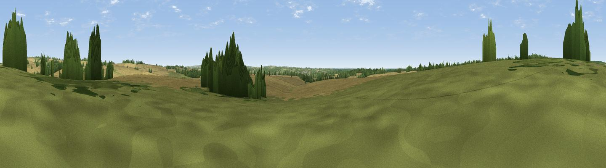

Frost Hill
#41881 in England · top 84% of its area beats it · near QuidhamptonWhere it is
The exact computed spot (SU 51441 52989). Click the marker for map links.
The view, rendered

A 360° render of this exact spot computed from the terrain model, tree cover and land cover — summer colours, afternoon light, calibrated against photographs of famous viewpoints. Real trees, hedges and buildings will differ in detail.
The panorama
Grey silhouette: terrain skyline in each direction (720 bearings, Earth curvature and refraction included). Dashed green: skyline with trees (+15 m) and buildings (+8 m) as obstacles. Blue strip: how far the ground is visible on each bearing.
Where the view opens
Wedge length = distance to the farthest visible ground on that bearing (vegetation-aware). Rings at 10, 25 and 50 km.
What fills the view
69% cropland · 18% grassland · 12% woodland ·
Angular shares of the visible panorama (visual magnitude), not map area. Landscape diversity 0.37 (0–1 Shannon).
Key numbers
More beautiful places nearby
The staircase of upgrades: each row has a higher view potential than everything closer. Driving times are estimates from straight-line distance, calibrated against real road routing — check an actual route before setting out.
| Place | Direction | Drive | Score |
|---|---|---|---|
| Viewpoint near Hannington | ENE · 2 km | ~6 min | 43.5 |
| Cottington's Hill | NNE · 4 km | ~9 min | 65.6 |
| Watership Down | NNW · 4 km | ~10 min | 71.4 |
| Beacon Hill | NW · 7 km | ~15 min | 76.7 |
| Martinsell viewpoint | WNW · 35 km | ~54 min | 77.3 |
| Viewpoint near Buriton | SSE · 38 km | ~58 min | 80.0 |
| Beacon Hill | SE · 45 km | ~66 min | 85.8 |
| Mottistone Down | S · 69 km | ~92 min | 87.2 |
51.27373, -1.26396 · source: osm peak · position refined by local search. Computed location — check access rights before visiting.